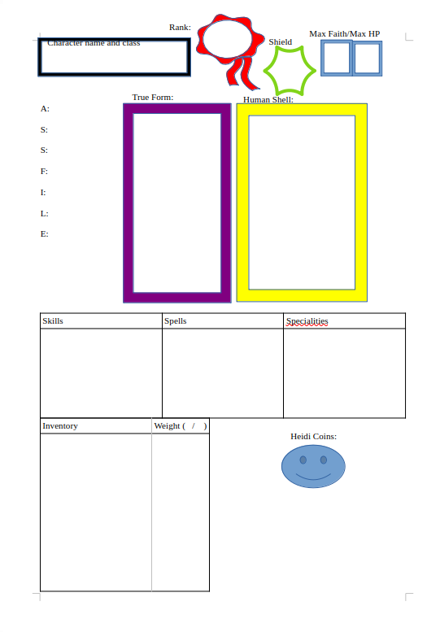

Heidi’s Priests - session 0
Soooo this is not a short story in the conventional way. This is going to be a treatment for a pen and paper rpg idea that I'm having. So whoever is reading this: View this either as a campaign setting if you are interested in dnd and stuff or a less conventional type of storytelling for a fantasy world.
Let's go:
Intro:
Close your eyes
It is cold. cold and lonely. time no longer exists. Everything is itchy and cold and lonely.
But then. then you feel a warmth. A warmth in your chest, leg or neck. The warmth pulls you. you are being dragged through the void towards the warmth. You feel the warmth slowly rising taking a hold of your whole body.
Then.
Bam.
…
You wake up not in your body but in a weird wooden puppet. You look to your left and to your right. more wooden puppets. You all seem quite disorientated. Then out of the shadows a small human steps. Small like 2 ft tall. Also naked. No body hair. No clothes. No genitals. No wrinkles. Very smooth. The person holds up a papyrus scroll and reads from it.
“Good morning my name is Peter One from Heidi's realm. I have the misfortunate burden of informing you that your souls were lost from earth due to unfortunate circumstances.
But there is also good news, Heidi, the God of our humble realm, has safed you from the torture of lonely floating through the void in despair and grants your lost souls a glorious second chance as their holy priests. They grant you the generous ability to visit your homeworld from time to time so you can spread the gospel^^
Further more you are granted a new home in this very realm and glorious Heidi will selflessly empower you to greater purpose.
And there is still more, by acquiring new worshipers on earth, Heidi and the realm grow in strength and possibilities, we all, but especially the priests that bring new souls into our humble churches on earth, will flourish and be able to enjoy the riches of our wonderful realm.
This is the glory and blessing of our God Heidi, blessed be Heidi!
Now all you have to do is sign your name into though holy book and commit to spread thy word”
With those words you have arrived at the gates of this realm that belongs to Heidi. You look around you still are in the void, however there is a pink wooden door behind this person. And below your now wooden feet there is a star painted into the void, one spike is under the door and the Other spikes under all the wooden puppets, the human stands in the middle.
—-------------------------------------------------------------------------------------------------------------------
With that introduction the players now have the options to become priests of Heidi.
A priest of Heidi then will be a member in the campaign. The campaign mainly consists of a series of one-shot adventures down on earth, so called pilgrimages. Depending on how the priests are doing, they could gain in power and influence for both themselves and the realm. Progress that will remain beyond the one-shot adventures and create a bigger game of intrigues and diplomacy both within and beyond the realm of Heidi.
—---------------------------------------------------------------------------------------------------------------------
First things first, let’s take a look at the kind of Priests you can Play:
There are two forms every priest will take:
…but also you set humanity into Terror and make yourself publicly present to the entire ethereal world.
Each player optimally prepares their true form before the start of the campaign, there is a test of character the gamemaster can put the players to in order to figure out their class it will follow beyond.
The human shells will be prepared by the Gamemaster and they can be drawn at random. Later the Gamemaster also can either reward good players with special shells or put them up in a store.
Test of Character:
There are 6 different classes (1. The Fanatic, 2. The Spiritual, 3. The Pilgrim, 4. The Enlightened, 5.The Cursed and 6. The Preacher) all are linked to certain characteristics, by going through the test, you collect points for each class the one you are most aligned with will be your class:
How do you wake up in the morning ?
You go to the kitchen to find your grandmother sleeping in a chair… again.
On your way to work, what means of transport do you take?
Oh no your Boss is mad at you
Back home. How do you unwind?
How did the Test make you feel?

This is the character sheet for a Priest of Heidi.
As you can see most of the character sheet may make intuitive sense if you have played a pen and paper before. Here are some of the more unique elements: Obviously Mana-Points got replaced with Faith-Points, the idea is similar, The ASSFILE-Stats summarise some basic traits (Agility, Strength, Speed, Faith, Intelligence, Language and Education), they are just stats. Then there are two portraits: Trueform is supposed the show a picture of your true form. For your Human-Shells you may be able to collect a deck of shells, place the one you are using on the “current shell” portrait.
Skills, Spells, Stats and Specialities will all be influenced by the class that you play, instead of the detailed explanation, here are some short summaries for which direction your class will lead you in.
Fanatic: Strength based, low education, language and intelligence, a close combat fighter.
Spiritual: Many faith points, lots of spells, good for supporting the crew.
Pilgrim: Speed, language and agility focused. Bad with faith and strength, lots of skills, thrives in being sneaky and avoiding combat.
Enlightened: A more offense oriented spellcaster.
Cursed: Many debuffs and complications, but extra ordinary speed, strength, agility and spells.
Preacher: Extraordinary language skills, decent at one or two other things, but mostly really mediocre. Really relies on language for everything.
—--------------------------------------------------------------------------------------------------------------------
With everyone signing their contracts the star below your feet begins to glow, the puppets catch fire and burn down, amongst the ashes all of you rise to your True Form.
“Alrighty, let’s go”
Peter One opens the door.
And your adventure begins.